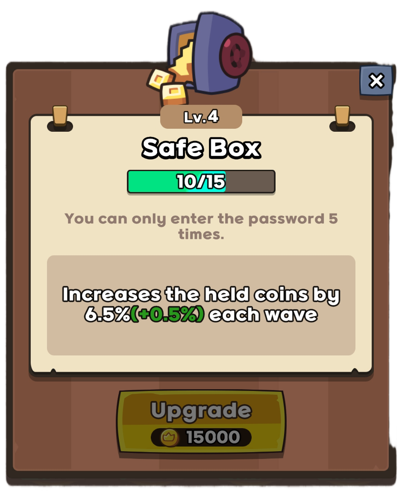
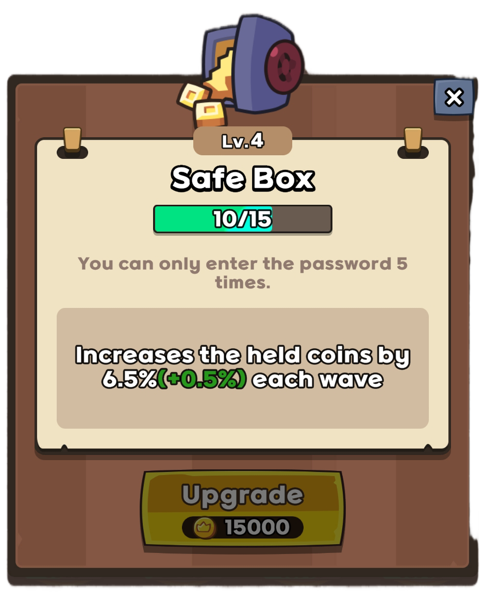
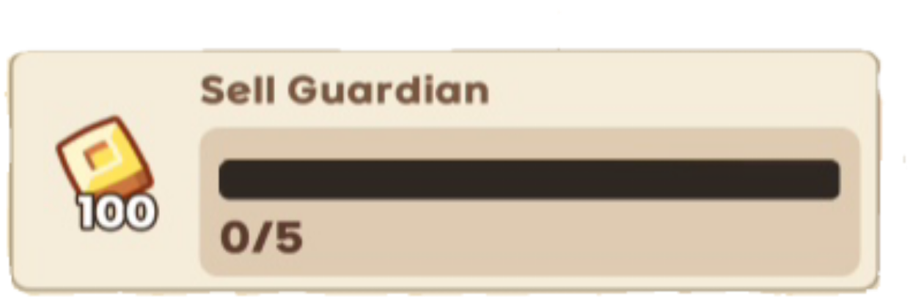
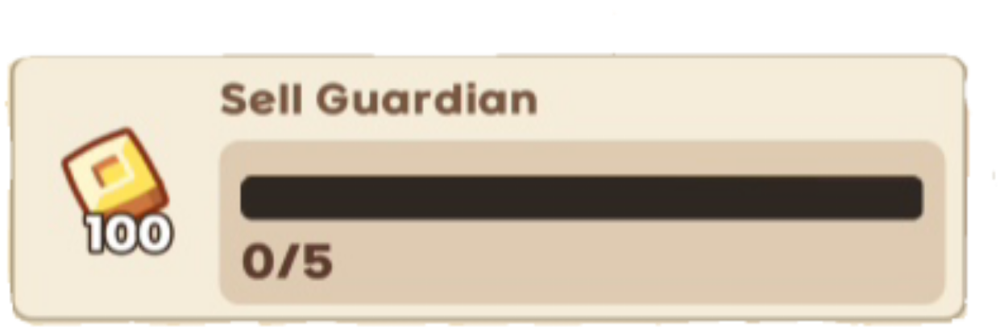

Intro
Follow this guide and you will be able to carry normal mode even at extremely low levels. It goes through the process of clearing normal mode from the opening waves, how to play the mid-game, and how to scale your damage to the very end. Read this and you will be able to win even if your partner has no thumbs.
Requirements:
To do this you're going to need these 3 artifacts at level 1 or higher
 

Stack Stones and Coins
You need to start the match by stacking luck stones and coins from missions. You’ll want to have the artifact item “luck stone” to do this because every mission you complete after you get it will give you a luck stone on top of the normal reward for completing that mission. Your goal is to do Epic Roulette Summon to get one or two epics units on the board so you can easily kill the hunts before wave 10.
The most reliable way to get luck stones fast is to complete these missions:
 


If you have the Luck Stone artifact you’ll have gained +400 coins and +4 luck stones from those missions. If you merged commons and sold blues, thats an extra +1 or +2 luck stones on top of that. It’s highly recommended to not merge your bandits because they help generate coins, but if you haven't gotten bandits to level 6 yet, they generate 5x less coins and you could probably get away with merging and selling them to do another Epic Roulette Summon.
Once you get an epic, it’ll easily kill your hunts and bosses. 2 killed hunts gives you +4 more luck stones, and killing your hunt before wave 10 gives you +100 coins and another luck stone because of another mission. You’re going to need to save coins for the next part of the strategy anyways, so after completing all those missions you should try to save 1000 coins. This completes another mission, giving you another +50 coins, and another luck stone.
Total Mission Luck Stones/Gold not including bosses and sold
rares:
+550 coins
+6 luck stones
Bosses and Hunts give +8 more.
If you spend all 14
luck stones on Epic Roulette Summon, you’ll average 3 to 4 epics
after. With 2 upgrades to epic damage, they will carry you long
enough to easily do the next parts to win normal mode without
having to spend a single coin on summoning.
Rush getting a DPS
The next step in securing a win is rushing to get a strong DPS mythic. There’s a trick to this that allows you to get the odds of success really high – you need to summon a legendary guardian as fast as possible. There’s a really good reason for this. Legendary units themselves aren’t that strong. However, there are only 4 legendary units in the game, and every single one of them turns into a unit that can either solo, or almost solo normal mode, even if you only have safebox and moneygun 1. If it can’t solo it, you just need to spawn one more legendary unit and get a second mythic guardian.
Once you get a legendary, convert it like this:
- War Machine - Use it to summon Rocket Chu
- Storm Elemental - Lazy Taoist
- Sheriff - Verdee
- Tiger - Batman or Master Kun
There is a catch to some of these units though:
Rocket Chu
Rocket Chu has an ult that lets you transform him into a way stronger version. But there’s a chance he’ll fail and explode when you try to transform him. His success chance is 35% at level 1, and gets as high as 50% at level 6, so it’s extremely worth the upgrade.
Verdee
Verdee is pretty strong, but her main attack (other than her ult) takes 10 seconds before it explodes, so you need to have plenty of stun for her to work. You should always have stun anyway though, so this isn’t such a big deal.
Batman
Batman is really strong, but his ability that makes him strong requires you to spend coins to upgrade him. This is very worth it, and +10 is a safe level to get him to. But coins are your main source of damage buff, so this is a big loss of damage. For this reason, it’s worth considering getting Master Kun instead. Master

Master Kun
Kun has a similar ability. Instead of upgrading +1 at a time in exchange for coins, he only upgrades when his ult is charged. When you use his ult, it gives him a random upgrade. If you get a weak upgrade, you’re going to have to wait for his ult to recharge. But since you can hold onto more coins, this is an upgrade in damage that’s worth it long term.
Lazy Taoist
The biggest catch is Lazy Taoist. Lazy Taoist is an iconic guardian because he’s very strong. He’s arguably the strongest unit in the game. Similar to Verdee, his attacks are very slow and rely on you having a lot of stun. But his truly unique trait is that he’s extremely weak until he’s level 12, where he’s much stronger, and attacks twice as fast. Before level 12 you’re going to have lackluster results with him, but there’s unfortunately not a better option if you do get storm elemental, so he’s still worth a summon.
For the best results, you’ll want Rocket Chu, Verdee, Master Kun, and Lazy Taoist to all be level 6. Past that, check out the separate guide on mythic unlock/upgrade order.
Lastly, you will get more legendaries doing epic gamble than you will doing legendary gamble. The conversion from luck stone to legendary is actually cheaper doing epic gamble than it is legendary gamble. So not only will epics keep you alive until you get one, but you’ll get legendaries more frequently this way as well.